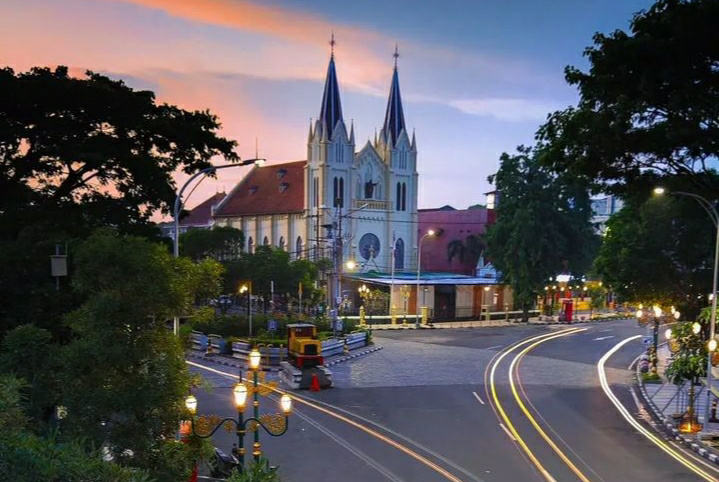
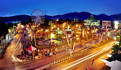

SURABAYA

Surabaya merupakan ibu kota Provinsi Jawa Timur dan menjadi kota paling besar di Jawa Timur dengan luas 350,54 km persegi. Surabaya juga menjadi kota terbesar nomor dua di Indonesia setelah Jakarta. Penduduk Kota Surabaya mencapai 3 juta jiwa. Kota ini merupakan pusat perdagangan, bisnis, pendidikan, dan industri yang paling besar di Pulau Jawa bagian timur.
- Pusat Ekonomi dan Bisnis: Sebagai ibu kota provinsi, Surabaya menjadi pusat perdagangan, industri, dan jasa terbesar di Jawa Timur.
- Infrastruktur Modern: Surabaya memiliki pelabuhan (Pelabuhan Tanjung Perak) dan bandara internasional (Juanda), yang menjadi hub utama di kawasan Indonesia timur.
- Pusat Pendidikan: Dikenal dengan universitas ternama seperti Universitas Airlangga dan Institut Teknologi Sepuluh Nopember.
- Sejarah Penting: Sebagai kota pahlawan, Pada 10 November 1945, terjadi pertempuran hebat di Surabaya antara pejuang Indonesia melawan pasukan Inggris. Pertempuran ini merupakan puncak dari pertempuran yang berlangsung selama lebih dari dua pekan dan berakhir pada 28 November 1945.
Pertempuran Surabaya 10 November 1945 merupakan salah satu momen paling heroik dalam sejarah perjuangan kemerdekaan Indonesia. Peristiwa ini menjadi simbol perlawanan terhadap penjajahan dan kemudian diperingati sebagai Hari Pahlawan.
Beberapa tokoh yang berperan dalam Pertempuran Surabaya 10 November 1945, di antaranya:
- Bung Tomo, yang membangkitkan semangat rakyat Surabaya untuk melawan penjajah melalui pidatonya
- Gubernur Soerjo, yang mengambil keputusan penting terkait ultimatum Sekutu
- K.H. Hasyim Asy'ari, yang mengeluarkan Resolusi Jihad untuk menggerakkan kaum santri
- Mayjen Sungkono, yang memimpin pasukan militer di Kota Surabaya
- Doel Arnowo, yang menghubungkan pemerintah pusat, pemerintah daerah, dan perwakilan Inggris
- K'Tut Tantri, yang mempublikasikan perjuangan rakyat Surabaya melalui surat kabar dan siaran Radio Pemberontak Surabaya
MALANG
>Urutan kota terbesar di Jawa Timur berikutnya adalah Kota Malang dengan luas 145,28 km persegi. Penduduk di kota ini mencapai 820.243 jiwa dengan pertumbuhan 3,9% per tahun.
Kota ini dijuluki sebagai Kota Sejarah, Kota Pariwisata, Kota Astra, Kota Apel, hingga Kota Budaya. Selain itu, julukan sebagai Kota Pendidikan juga disematkan pada Kota Malang karena terdapat berbagai perguruan tinggi ternama.
- Pusat Pendidikan: Malang adalah rumah bagi berbagai perguruan tinggi ternama, seperti Universitas Brawijaya dan Universitas Negeri Malang, yang menarik banyak mahasiswa dari luar daerah.
- Pariwisata: Kota Malang dikenal dengan suasana sejuk dan tempat wisata seperti kampung tematik, taman bunga, dan wisata alam di sekitarnya.
- Ekonomi Beragam: Sektor pariwisata, perdagangan, dan pendidikan menjadikan Malang kota dengan pertumbuhan ekonomi yang stabil.
- Industri Kreatif: Banyak kegiatan seni, budaya, dan industri kreatif tumbuh subur di kota ini.
BATU
Kota Batu menduduki urutan ketiga kota paling besar di Jawa Timur dengan luas 136,74 km persegi. Jumlah penduduknya mencapai 214.603 jiwa. Potensi keindahan alam yang menakjubkan membuat Kota Batu terkenal sebagai salah satu destinasi pariwisata terkemuka di Indonesia.
- Kota Wisata: Batu dikenal sebagai destinasi wisata utama di Jawa Timur, dengan daya tarik seperti Jatim Park, Batu Night Spectacular, dan wisata alam seperti Selecta dan Coban Rondo.
- Pertanian dan Perkebunan: Lokasinya yang sejuk dan subur menjadikan Batu penghasil apel, stroberi, dan sayuran yang penting di Jawa Timur.
- Ekonomi Berbasis Pariwisata: Pendapatan utama kota Batu berasal dari sektor wisata dan pendukungnya, seperti penginapan, restoran, dan pusat oleh-oleh.
| no | nama kota | Keunggunlan | jumlah penduduk |
| 1 | Surabaya | Pusat ekonomi, bisnis, dan pendidikan; pelabuhan dan bandara internasional. | ± 3 juta jiwa |
| 2 | Malang | Universitas ternama, wisata alam, suasana sejuk, dan ekonomi berbasis perdagangan dan pariwisata. | ± 900 ribu jiwa |
| 3 | Batu | Pariwisata unggul seperti Jatim Park, wisata alam, dan hasil pertanian seperti apel. | ± 200 ribu jiwa |